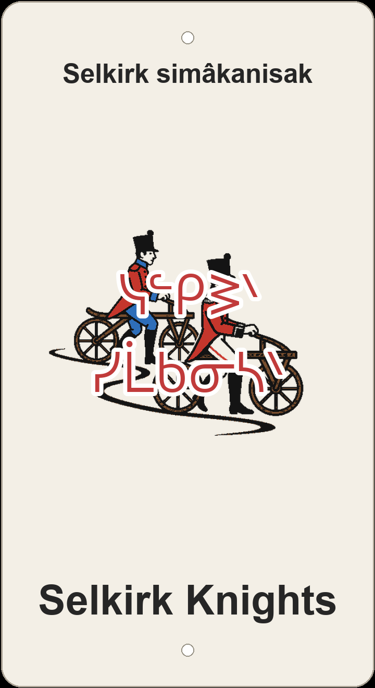

"Selkirk soldiers/knights"

3D-printed sign preview — scarlet British officer and De Meuron soldier on 1817 wooden dandy-horses down a winding trail (screenprint).
Selkirk Knights is rendered on the plaque as Selkirk simâkanisak — 'Selkirk soldiers/knights.' Selkirk stays a phonetic ᓭᓪᑭᕒᐠ beside the Cree; simâkanis 'soldier, warrior' is the everyday word closest to English knight, and -ak marks the plural. Plains Cree has no medieval title for 'knight'; the name keeps the warrior order of the English while naming real fighters, not horsemen.
The English looks back to the Selkirk settlers and the early-1800s regiments tied to that name — the screenprint makes that history literal: a scarlet British officer and a De Meuron regiment soldier with sky-blue facings, but both ride antique 1817 wooden dandy-horse bicycles down a winding trail instead of cavalry mounts. That is why the plaque keeps simâkanisak rather than the alternate Selkirk omisatimiwak simâkanisak 'Selkirk mounted knights' — the soldiers are knights in the warrior sense, while the art swaps horses for two-wheeled wooden steeds. A plainer reading, Selkirk nôtinikêwak 'Selkirk fighters,' foregrounds combat without the knightly echo.
The name also winks at sibling trail Knights of Ren (Rên osimâkanisimak, ᕒᐁᐣ ᐅᓯᒫᑲᓂᓯᒪᐠ) — another warrior-order pun on a different borrowed name — while both share the simâkanis stem for 'soldier/knight.' In the same Edmonton river-valley web, nearby nicknames braid English humour into Cree: Capilano Access (Kapilâno isi-pîhtokêwin), Fort Edmonton Park Double Track (amiskwacî nîso-meskanaw), Wolf Willow Access (mahihkani-nîpisiy pîhtokêwi-meskanaw), Machete-climb (mistikokahikan amaciwêwin), Breathless (namôya kî-yêhyêw), and Deliverance (pâspinâwin) among others on the same hillside network.
This sign sits on ᓀᐦᐃᔭᐤ ᐊᐢᑭᕀ Nêhiyaw-Askiy — Plains Cree territory, Treaty 6, a homeland of the Métis Nation. These plaques are one way of putting nêhiyawêwin back on the land it was always spoken on.
A ~2 km Edmonton line with about 31 m of descent and 36 m of ascent — a winding ribbon in the local river-valley network beside Capilano Access, Fort Edmonton Park Double Track, and the other nickname trails on this hillside. Tap through to Trailforks on the poster for the mapped line and rider reports.
Explore the trail on Trailforks, with a local preview from the uploaded GPX.
nôtinikêw 'one who fights/warriors'.
Adds mounted-horse imagery for knights.
| English | SRO | Syllabics |
|---|---|---|
| Selkirk soldiers/knights | Selkirk simâkanisak | ᓭᓪᑭᕒᐠ ᓯᒫᑲᓂᓴᐠ |
| Selkirk fighters | Selkirk nôtinikêwak | ᓭᓪᑭᕒᐠ ᓅᑎᓂᑫᐗᐠ |
| Selkirk mounted knights | Selkirk omisatimiwak simâkanisak | ᓭᓪᑭᕒᐠ ᐅᒥᓴᑎᒥᐗᐠ ᓯᒫᑲᓂᓴᐠ |
| soldier, warrior | simâkanis | ᓯᒫᑲᓂᓴ |
| one who fights | nôtinikêw | ᓅᑎᓂᑫᐤ |
| horse | omisatim | ᐅᒥᓴᑎᒥ |
SRO uses ê î ô â. Syllabics match the SRO shown.
Dialectal preferences may affect minor spelling choices; check local norms for signage.
References: itwêwina, Online Cree Dictionary, Plains Cree Dictionary
Each sign is 3D printed in Edmonton. Want one for your own trail, cabin or wall? Email hello@nehiyomtb.ca.